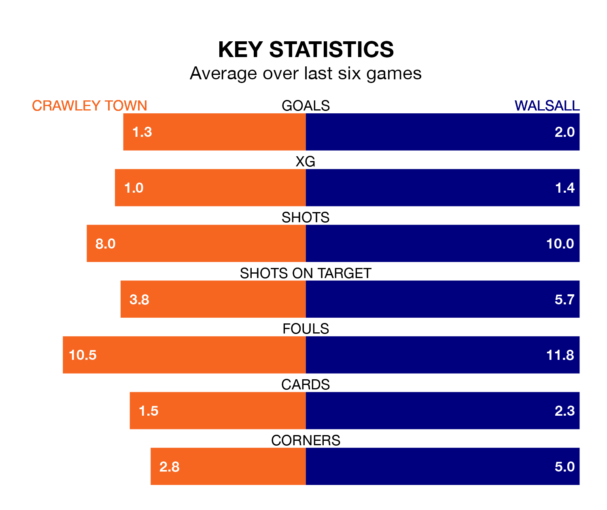

Crawley Town welcome Walsall to the Broadfield Stadium on late Tuesday looking to pick up points to end their three-game losing streak.
Crawley's struggles have left them with six points from their last six EFL League Two matches, while their opponents have earned eight from a possible 18.
In the last 10 years, Crawley and Walsall have played each other on 13 occasions. Crawley won four of them, Walsall five, and they drew four times.
On average, the Red Devils scored 1.1 goals and the Saddlers 1.5 in those matches.
Their last meeting was on October 24, when they played out a 1-1 draw.
With 42 goals in 29 games so far this season, Walsall are scoring at below the league average rate with 1.4 goals per game. And they are conceding at an average rate, letting in 44 goals at a rate of 1.5 per game.
Crawley, meanwhile, are average scorers, with 1.5 goals per game. They have conceded 1.7 goals per game.
The Saddlers are 16th in the table after 29 games, of which they have won 10 and drawn eight, earning 38 points.
Town are one place ahead of the visitors in 15th, with 12 wins and three draws putting them on 39 points.
In Danilo Orsi-Dadamo, the Red Devils have one of the league's most on-form strikers so far this season. He has notched 13 goals in 28 appearances, to sit eighth in the scoring charts.
His goal rate of one every 189 minutes is slightly quicker than that of Freddie Draper, Walsall's top scorer with a goal every 164 minutes, and a total of 10 goals in 21 games.
Crawley's last match was on Saturday, a 1-0 loss against Crewe Alexandra.
Walsall lost 3-0 against Newport County last time out, also on Saturday.
Tuesday's match will be refereed by John Busby, who has taken charge of four EFL League Two games so far this season, issuing no red cards and booking nine players. He has not awarded any penalties.
He is yet to oversee a match featuring either Crawley or Walsall this season.
Updated: 09:02 (UTC), 13/02/24